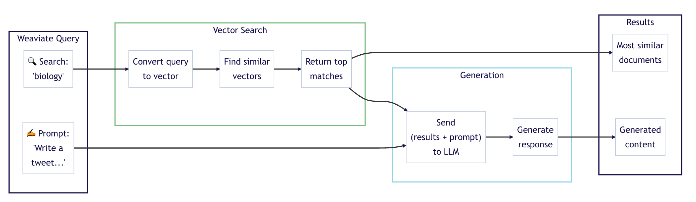

Steps I took to create this project!
Step 1:
After researching I went to the Weaviate website and found whatever version is free. This brought me to the cloud clusters. I was given a sandbox that contained a REST Endpoint (a specific path in a REST API that a client can use to interact with a resource) and an Admin API Key. With these I was able to create a basic python file, import Weaviate and its auth, then import the REST Endpoint and Admin Key (I had stored them as environment variables), to then connect to my sandbox through the cloud! It was an easy process, all I did was connect and then ran a line of code that would print true or false based on if I had connected (print(client.is_ready()))! One thing I learned is that APS (Arlington Public Schools) blocks EVERYTHING! I was unable to connect on my school Wifi, and had to use my hotspot to connect to it!
Step 2:
I had to create something called a collection, this would store my data and it would be the thing I ran my queries through. It was like a table! It was pretty simple to set up, I ran the same connection code as above and just added a new block that defined a variable and created a collection within it. It then uses this line - vectorizer_config=Configure.Vectorizer.text2vec_weaviate() - to configure how text data will be converted into vector embeddings using Weaviates built in text2vec module. This line - generative_config=Configure.Generative.cohere() - sets up generative AI capabilities using Cohere's generative AI model which will be integrated later.
Step 3:
Data time!! Because this was just for a project, I used an AI (DeepSeek) to create me a random jeopardy data set. Then I connected to my sandbox, called my collection and then ran a batch import. This parses the JSON file into a Python dictionary. Once it reads and parses the file, it accesses the Weaviate collection (created earlier) using this line questions = client.collections.get("Question"). A batch import, is efficient for large datasets, and imports with a batch size of 200. Then it loops through each category on the JSON file. Then for each question it adds it to Weaviate. The end of the batch import stops it if more than 10 errors occur.
Step 4:
Query time!! It's time to run our first query! We print our first queries using this code. The code connects to the collection which we just loaded data into. Then we set a variable which preforms a semantic search to find objects similar to the word science (for example). Essentially, the code coverts the query (which in this case is science) to a vector using the collections vectorizer, then compares this against other vectors in the collection, then returns the top 2 results.
Step 4:
Time for the RAG model! Here were using Cohere. We use Retrieval Augmented Generation (RAG), aka generative search, to combine the power of generative AI models (such as Large Language Models (LLMs)) with databases! RAG works by prompting a large language model with a combo of user query and data retrieved from the database. Here is a helpful diagram provided by Weaviates quickstart tutorials:
It uses the same connection code that we originally mentioned from earlier that we have been using in every file, except now we are connecting to Coheres API using one of their trial keys. Then we connect to the collection, which has data loaded into it from earlier. Now, remember this little line of code - generative_config=Configure.Generative.cohere() - from earlier? This line of code allows for the collection to use generative AI models such as cohere. Then we follow the same query structure as query.py except we give the LLM a task. Then we print it to get a fun 'tweet' containing emojis.
Step 5: Done!
We've created a vector database that utilizes a RAG model!! If you want a more in depth look at the code, go to my markdown file!